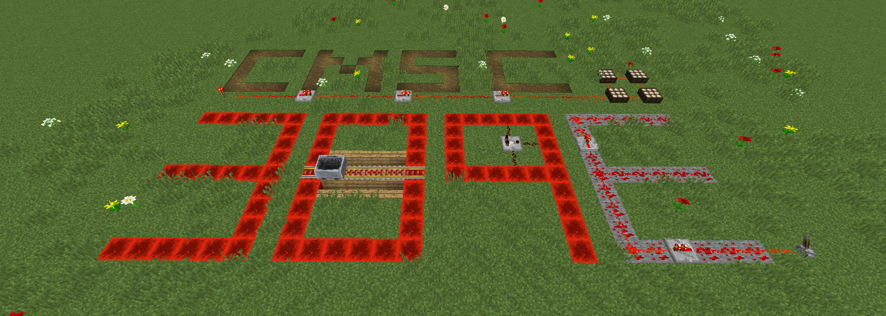

Announcements and Q/A will happen via Discord. Projects will be submitted/graded through Gradescope. Grading will be handled through ELMS.
Students are expected to watch or attend weekly lecture. Resources that will help you with the conceptual material and projects will be available in the 'Resources & Reading' column. If you are unfamiliar with material or need a review, please feel free to schedule office hours with either instructor through Discord.
| Week | Lecture & Reading | Project(s) | Resources & Videos |
|---|---|---|---|
| 1 |
Introduction & Logistics
slides
Redstone Basics c1.3 Join the Discord (in ELMS announcements) |
Complete Setup/Installations link
Tutorial Island - Due TBA project 1 |
MC & Redstone Basics
MattBatWings
Redstone Basics (OLD) video (OLD) Minecraft Basics c1.1 Minecraft Basics c1.2 Minecraft Wiki link |